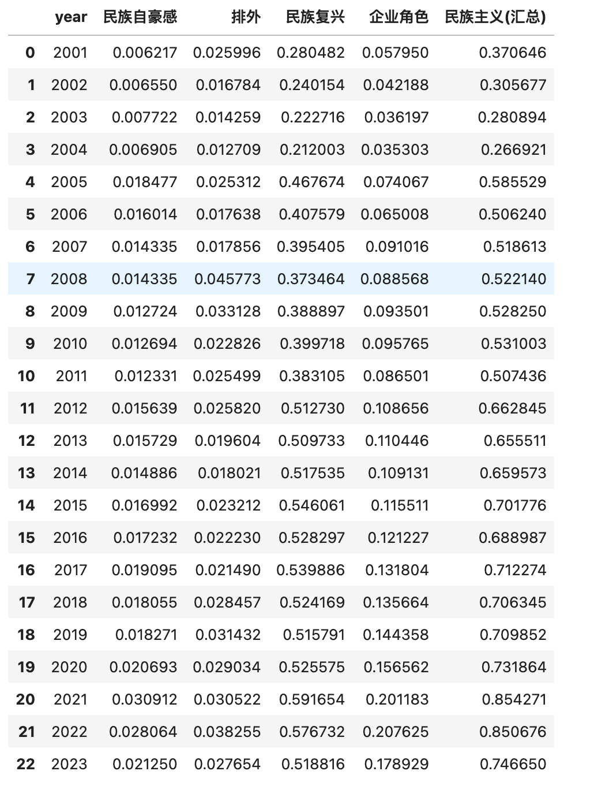

一、文献
Yue, Lori Qingyuan, Jiexin Zheng, and Kaixian Mao. “Firms’ Rhetorical Nationalism: Theory, Measurement, and Evidence from a Computational Analysis of Chinese Public Firms.” Management and Organization Review 20, no. 2 (2024): 161-203.
摘要
本文建立了 企业民族主义 的理论框架和概念测量。我们首先回顾了相关文献，并建立了一个四维的企业民族主义理论框架：民族自豪感、排外主义、主导议程（民族复兴）和企业角色(在实现国家民族主义目标中的使命和角色)。我们使用基于机器学习的文本分析方法，对2000年成立到2020年中国市政多份年报进行分析，并为每个维度确定了一个词库。利用相关词汇的加权比例，我们建立了中国上市公司语言民族主义测量，并首次提供了中国国有企业语言民族主义上升的实证证据。企业在语言上表现出的民族主义与其战略因素有关；国有企业、历史较长、规模较大、盈利能力较强、面向消费者、个人投资者较多、海外销售额较少的企业表现出的民族主义水平较高。这些在语言上表现出更多民族主义的企业，其未来的财务回报率也较高。
二、企业修辞民族主义
2.1 原文算法
依据大邓对论文的理解，复现企业修辞民族主义测量过程， 大致可分为3个步骤
- Step1 民族主义(四维度)理论基础
- Step2 使用md&a语料训练words2vec，扩充民族主义词典
- Step3 使用民族主义词典]，tfidf方式计算民族主义指标
2.2 已有资源
大邓已有的数据或者工具
- 已有md&a训练的word2vec模型
- cntext2.x的sentiment函数，可实现词典的文本分析
- cntext2.x内置了民族主义词典
2.3 注意
所以我们直接进行到Step3， 为了简化本文复现难度， 没有使用tfidf方式测量。
常规文本分析默认词典中的所有词语权重均为1，
而tfidf认为词典中的词语是有差异的，带着不同的权重。
三、代码实现
3.1 查看词典
大邓整理了论文中的词表，将其内置于cntext2.1.3
import cntext as ct
nationism_diction_info = ct.read_yaml_dict('zh_common_RhetoricalNationalism.yaml')
nationism_diction_info
Run
{'Name': 'Firms Rhetorical Nationalism',
'Desc': '企业修辞民族主义，含四个词表， 分别是民族自豪感、排外、民族复兴和企业角色。 https://sites.google.com/view/firms-rhetorical-nationalism/home',
'Refer': 'Yue, Lori Qingyuan, Jiexin Zheng, and Kaixian Mao. "Firms’ Rhetorical Nationalism: Theory, Measurement, and Evidence from a Computational Analysis of Chinese Public Firms." Management and Organization Review 20, no. 2 (2024): 161-203.',
'Category': ['民族自豪感', '排外主义', '民族复兴', '企业角色'],
'Dictionary': {
'民族自豪感': ['中华文化', '瑰宝', '源远流长',......, '人民满意', '纲领性文件', '国民素质'],
'排外': ['贸易战', '争端', '制裁',......, '离岸', '卡脖子', '原油'],
'民族复兴': ['中国梦', '宏伟目标', '共同富裕',......, '新起点', '新篇章'],
'企业角色': ['自主', '世界领先', '独立自主', ......, '产业报国','建功立业']}}
import cntext as ct
nationism_diction = ct.read_yaml_dict('zh_common_RhetoricalNationalism.yaml')['Dictionary']
nationism_diction
Run
{'民族自豪感': ['中华文化', '瑰宝', '源远流长',......, '人民满意', '纲领性文件', '国民素质'],
'排外': ['贸易战', '争端', '制裁',......, '离岸', '卡脖子', '原油'],
'民族复兴': ['中国梦', '宏伟目标', '共同富裕',......, '新起点', '新篇章'],
'企业角色': ['自主', '世界领先', '独立自主', ......, '产业报国','建功立业']}}
3.2 小实验
写代码，要先简单(抽象局部)后复杂(扩展到整体)。
import cntext as ct
#实验文本
text = '某某公司高举产业报国精神， 独立自主创新， 经过多年发展，该公司在该领域处于世界领先'
#民族主义词典
nationism_diction = ct.read_yaml_dict('zh_common_RhetoricalNationalism.yaml')['Dictionary']
nationism_diction
print(ct.__version__)
ct.sentiment(text=text, diction=nationism_diction)
Run
2.1.3
{'民族自豪感_num': 0,
'排外主义_num': 0,
'民族复兴_num': 1,
'企业角色_num': 4,
'stopword_num': 8,
'word_num': 22,
'sentence_num': 1}
计算结果解读
- 民族自豪感_num 文本中民族自豪感词语出现总次数
- 排外_num 文本中排外词语出现总次数
- 民族复兴_num 文本中民族复兴词语出现总次数
- 企业角色_num 文本中企业角色词语出现总次数
- stopword_num 文本中停用词词语出现总次数
- word_num 文本中词语总数
- sentence_num 文本中句子总数
3.3 读取md&a
import pandas as pd
df = pd.read_csv('mda01-23.csv.gz')
df
3.4 批量计算民族主义
import pandas as pd
from pandarallel import pandarallel
pandarallel.initialize(progress_bar=True)
def nationism_stats(text):
return pd.Series(ct.sentiment(text=text, diction=nationism_diction, lang='chinese', return_df=False))
#统计词频
#并行运算
stats_df = df['text'].parallel_apply(nationism_stats)
#计算四个维度民族主义的指标
stats_df['民族自豪感'] = 100*stats_df['民族自豪感_num']/stats_df['word_num']
stats_df['排外主义'] = 100*stats_df['排外主义_num']/stats_df['word_num']
stats_df['民族复兴'] = 100*stats_df['民族复兴_num']/stats_df['word_num']
stats_df['企业角色'] = 100*stats_df['企业角色_num']/stats_df['word_num']
stats_df['code'] = df['code']
stats_df['year'] = df['year']
stats_df['民族主义(汇总)'] = stats_df[['民族自豪感', '排外主义', '民族复兴', '企业角色']].mean(axis=1)
#选择需要的字段显示和存储
select_cols = ['code', 'year', '民族自豪感', '排外', '民族复兴', '企业角色', '民族主义(汇总)']
stats_df[select_cols].to_csv('A股上市公司-修辞民族主义2001-2023.csv', index=False)
stats_df[select_cols]
3.5 可视化
求得A股每年的均值
import pandas as pd
datas = []
stats_df = pd.read_csv('A股上市公司-修辞民族主义2001-2023.csv')
for year, year_df in stats_df.groupby('year'):
select_cols = ['民族自豪感', '排外', '民族复兴', '企业角色', '民族主义(汇总)']
ys = year_df[select_cols].mean(axis=0)
datas.append((year, ys['民族自豪感'], ys['排外'], ys['民族复兴'], ys['企业角色'], ys['民族主义(汇总)']))
#print(year, )
stats_df2 = pd.DataFrame(datas)
stats_df2.columns = ['year', '民族自豪感', '排外', '民族复兴', '企业角色', '民族主义(汇总)']
stats_df2

import platform
import matplotlib.pyplot as plt
import matplotlib
import matplotlib_inline
matplotlib_inline.backend_inline.set_matplotlib_formats('png', 'svg')
import scienceplots
import platform
plt.style.use(['science', 'no-latex', 'cjk-sc-font'])
system = platform.system() # 获取操作系统类型
system = platform.system() # 获取操作系统类型
if system == 'Windows':
font = {'family': 'SimHei'}
elif system == 'Darwin':
font = {'family': 'Arial Unicode MS'}
else:
font = {'family': 'sans-serif'}
matplotlib.rc('font', **font) # 设置全局字体
plt.figure(figsize=(10, 6))
plt.plot(stats_df2.year, stats_df2['民族主义(汇总)'], label='民族主义(汇总)', color = 'black' , lw=3, linestyle='-')
plt.plot(stats_df2.year, stats_df2['民族复兴'], label='民族复兴', color='blue', lw=3, linestyle='-.')
plt.plot(stats_df2.year, stats_df2['企业角色'], label='企业角色', color='red', lw=3, linestyle=':')
plt.plot(stats_df2.year, stats_df2['排外'], label='排外', color='green', lw=3, linestyle=':')
plt.plot(stats_df2.year, stats_df2['民族自豪感'], label='民族自豪感', color='grey', lw=3, linestyle='--')
plt.xlabel('年份')
plt.ylabel('')
plt.title('A股年报修辞民族主义年度趋势(2001-2023)')
plt.legend(loc='upper left')
plt.show()
论文中民族主义4个维度的可视化
两幅图的走势是近似的， 在2005年都是飙升到一个新水平，之后稳步上升。
四、注意
两幅图的Y轴的值差异比较大的原因
- 数据集略有差异， 文本清洗方法。
- 计算词频的同时，论文考虑到词语权重差异，使用了TF-IDF。本文默认所有词语权重为1，只统计词频。
论文作者公开了数据和代码资料， 可前往 https://sites.google.com/view/firms-rhetorical-nationalism/home
五、获取资料
加微信372335839，备注[姓名-学校-专业]
- 100元 cntext-2.1.3-py3-none-any.whl
- 100元 mda01-23.csv.gz
- 30元 "A股上市公司-修辞民族主义2001-2023.csv"